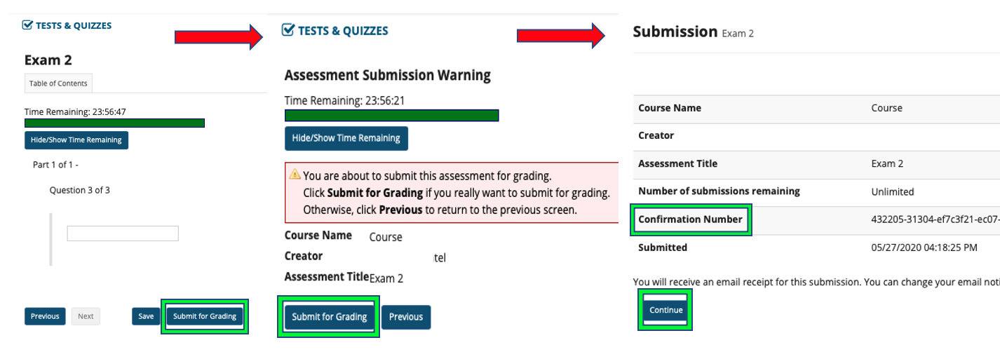

Only use and
- Once the quiz/test begins, do not click on the back button, refresh, or close the browser. This can cause unexpected problems with your assessment such as losing your work. If you need to move to another question, use the Previous and Next buttons underneath the question.

Avoid Double Clicking
- Click links and buttons only once. Double or repeated clicking will cause data discrepancy.
Avoid Multiple Browsers
- Open only one instance of Sakai. If the test is open in multiple windows, tabs, browsers, or computers, your answers may be submitted incorrectly, and the test timer may be incorrect as well. Sakai might also temporarily close your quiz/test and display a 'data discrepancy' warning in order to force you to reopen the exam in only one window and browser.
Save Your Work
- Save your answers frequently with
- Although Claremont Sakai automatically saves your quiz/test every 5 minutes by default, it doesn't hurt to save more often.

Check Your Internet Connection
- Make sure you are on a reliable internet connection to avoid losing your answers. Do not use mobile devices to take tests.
Check Running Programs
- Turn off virus scans, Instant Messaging, or any other programs that may cause pop-up windows, open browsers, or restart your computer.
Time Limit
- In a Timed Test, your instructor can set the time allowed to complete a test. Once you begin the test, a timer will appear in the browser. Please note that the timer will keep running, even if the test window/browser is closed, whether purposely by you or due to any sort of technical problem.

Successful Submission
- After clicking wait for the submission screen that includes your Confirmation Number.
- Depending on your connection, it may take several minutes. If you close your browser before seeing this screen, your test may not be recorded.
- 